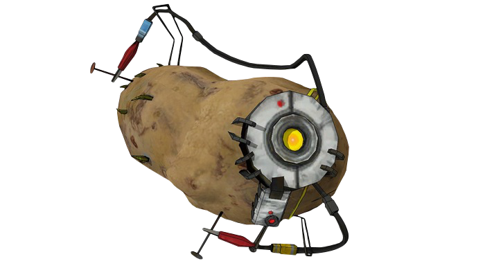

<!--
    Conteúdo dos Hyperlinks

    - Qualquer conteúdo
-->

<a href="http://google.com" title="Ir para google">
    <h1>Google</h1>
    <p>Claro que posso por mais conteúdo</p>
    
</a>

<!-- 
    URLs e Caminho dos Arquivos

    - Uniform Resource Locator
        - https://www.rocketseat.com.br
        - Sequência de texto que define onde algo está localizado na Web
    - URLs usam caminhos para encontrar os arquivos

    - Caminho dos arquivos
        - Onde, no explorador de arquivos, um recurso está localizado
-->

<a href="2-Anatomia.html">Abrir links</a>

<!--
    Como navegar pelos caminhos?

    - mesmo diretório
    - entrando em diretórios
    - saindo de diretórios
    - diretório raiz (root ou pai) -> o diretório o qual o arquivo está contido
-->

<!--
    Acessando pastas que estão no mesmo diretório
-->



<!-- 
    Acessando itens fora do diretório
    ../ é como saimos do diretório
-->


<!--
    Acessando arquivo no diretório raiz
    ./ para acessar a root
-->

<a href="./2-Anatomia.html">Anatomia HTML</a>

<!--
    URLs absolutos versus URLs relativos

    - Absolutos
        - Inclui o protocolo e o nome de domínio
            - http://www.rocketseat.com.br/projeto/index.html
        - Sempre apontará para o mesmo local, pois é absoluto
    
    - Relativos
        - Relativo à página aberta no momento
        - Apontará para diferentes lugares
        - Foi o que acabamos de ver 
-->

<!-- Relativo à pasta local-->
<a href="google.com">relativo: ir para o google</a>

<!-- Absoluto, não importa onde esteja-->
<a href="https://google.com">absoluto: ir para o google</a>